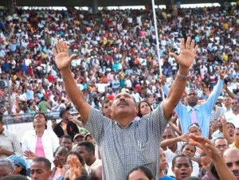
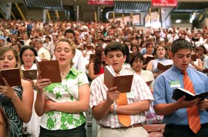
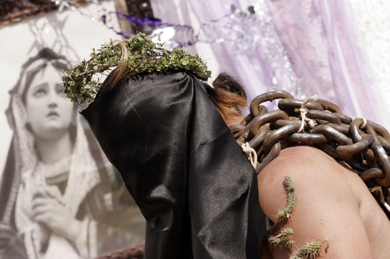
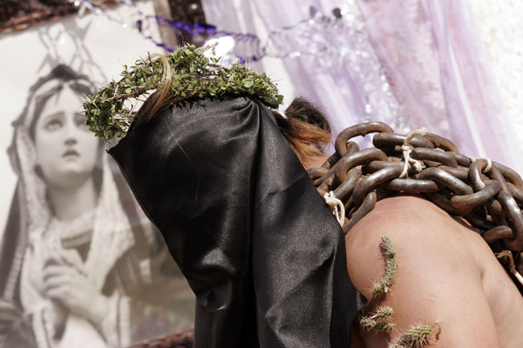

Celebración de Semana Santa
¿En que consiste la Semana Santa?
A la Semana Santa se le llamaba en un principio “La Gran Semana”. Ahora se le llama Semana Santa o Semana Mayor y a sus días se les dice días santos. Esta semana comienza con el domingo de Ramos y termina con el Domingo de Pascua. Vivir la Semana Santa es acompañar a Jesús con nuestra oración, sacrificios y el arrepentimiento de nuestros pecados. Asistir al Sacramento de la Penitencia en estos días para morir al pecado y resucitar con Cristo el día de Pascua. Lo importante de este tiempo no es el recordar con tristeza lo que Cristo padeció, sino entender por qué murió y resucitó. Es celebrar y revivir su entrega a la muerte por amor a nosotros y el poder de su Resurrección, que es primicia de la nuestra.

Días de Celebración
Jueves Santo:
Este día recordamos la Última Cena de Jesús con sus apóstoles en la que les lavó los pies dándonos un ejemplo de servicialidad. En la Última Cena, Jesús se quedó con nosotros en el pan y en el vino, nos dejó su cuerpo y su sangre. Es el jueves santo cuando instituyó la Eucaristía y el Sacerdocio. Al terminar la última cena, Jesús se fue a orar, al Huerto de los Olivos. Ahí pasó toda la noche y después de mucho tiempo de oración, llegaron a aprehenderlo.
Viernes Santo:
Ese día recordamos la Pasión de Nuestro Señor: Su prisión, los interrogatorios de Herodes y Pilato; la flagelación, la coronación de espinas y la crucifixión. Lo conmemoramos con un Via Crucis solemne y con la ceremonia de la Adoración de la Cruz.
Sábado Santo:
Sábado Santo o Sábado de Gloria: Se recuerda el día que pasó entre la muerte y la Resurrección de Jesús. Es un día de luto y tristeza pues no tenemos a Jesús entre nosotros. Las imágenes se cubren y los sagrarios están abiertos. Por la noche se lleva a cabo una vigilia pascual para celebrar la Resurrección de Jesús. Vigilia quiere decir “ la tarde y noche anteriores a una fiesta.”. En esta celebración se acostumbra bendecir el agua y encender las velas en señal de la Resurrección de Cristo, la gran fiesta de los católicos.
Domingo Santo:
Es el día más importante y más alegre para todos nosotros, los católicos, ya que Jesús venció a la muerte y nos dio la vida. Esto quiere decir que Cristo nos da la oportunidad de salvarnos, de entrar al Cielo y vivir siempre felices en compañía de Dios. Pascua es el paso de la muerte a la vida.
¿Cómo celebran otras religiones?
Cristianos Evangelicos
Para los miembros de la iglesia cristiana evangélica, la Semana Santa es el tiempo para recordar la muerte de Cristo. Para conmemorarla, se congregan en una jornada de oración y adoración, la cual inicia el jueves santo a las 9:00 de la noche y se extiende por 24 horas. En esta reunión se dan cita grupos artísticos y musicales, ya que los cristianos creen que “Dios habita en medio de la alabanza”. Además, para ellos es fundamental la vigilia, es decir, pasar una noche en vela y adorando a Dios
Testigos de Jehová
Los miembros de esta religión celebran la Cena del Señor con pan sin levadura y vino en sus congregaciones. A esta fracción del pan solo pueden acercarse las personas ungidas –según sus escritos– aquellos que tengan la esperanza de ir al cielo. Para los testigos de Jehová la Semana Santa comienza el 14 de abril, o 14 de Nisán, y comprende desde la puesta de sol hasta la próxima.
 
